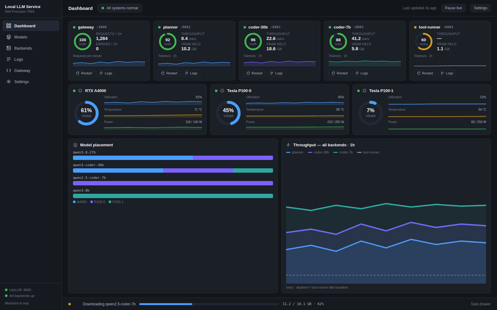
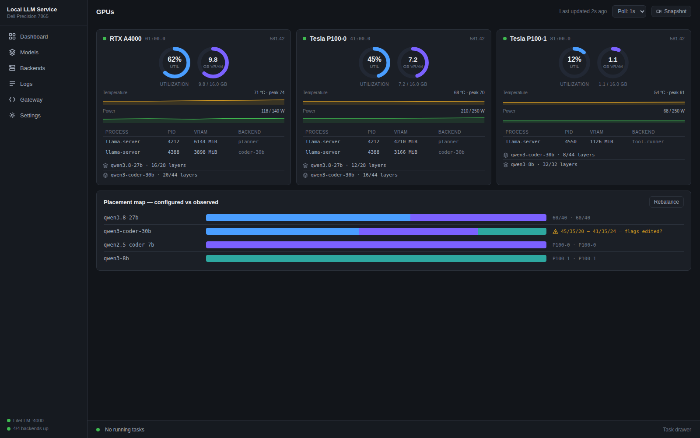
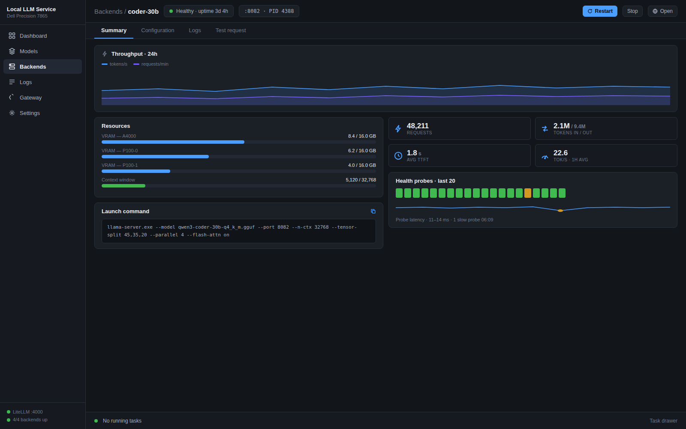
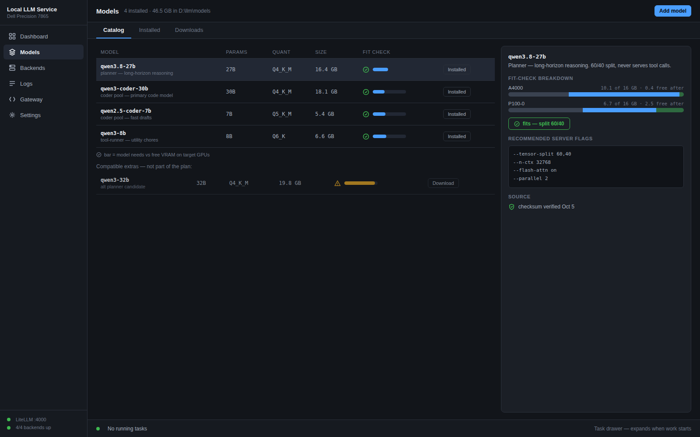
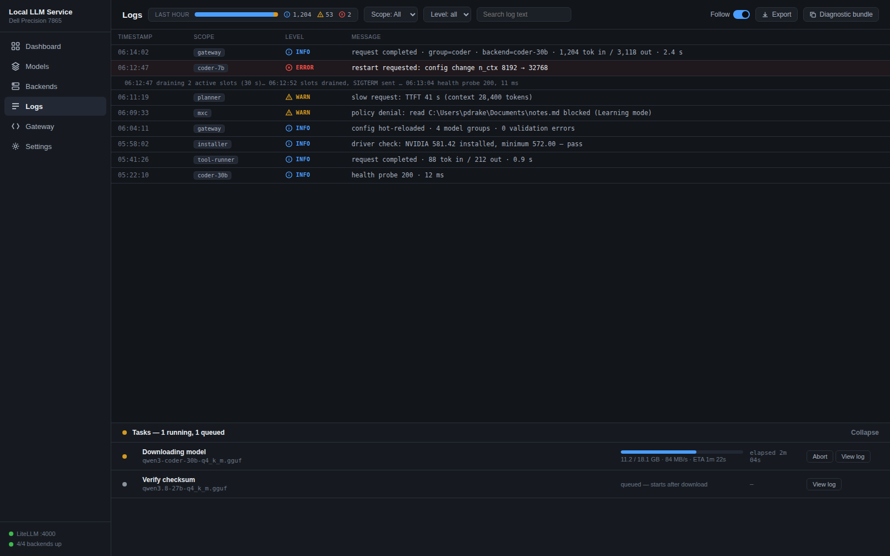

Design B — The Appliance Console: mockups
8 windows · 1600×1000 viewport captures · dark theme. From design-b.md (2026-10-08).
01Set up Local LLM Service — first-run wizard, stage 4 (Models)

02Dashboard — service cards, GPU strip, placement map, activity

03GPUs — per-GPU telemetry, process attribution, placement map

04Backends / coder-30b — summary, resources, launch command, health

05Models — catalog with live fit-check, detail pane

06Logs — scoped log stream with expanded task drawer

07Gateway — model groups, routing rules, requests, latency

08Settings — Sandbox (MXC) policy editor, Learning mode